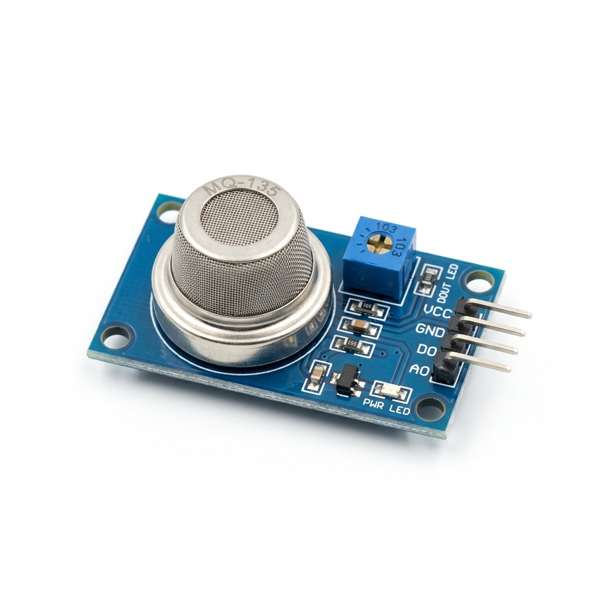

Hardware Design Document
Air Quality Index
Monitoring System
ESP32-Based Multi-Sensor AQI Platform
ESP32-Based Multi-Sensor AQI Platform
Design a compact, real-time Air Quality Index monitoring system capable of detecting harmful gases and particulate matter concentrations in indoor and outdoor environments.
Built-in Wi-Fi and Bluetooth via ESP32 enables wireless data transmission to cloud dashboards or local display units for remote monitoring.
Low-power design operating at 3.3V–5V, suitable for battery-powered deployments with sleep mode capabilities for extended field operation.
Dual-sensor architecture combining gas detection (NH₃, CO₂, Benzene, NOₓ) and particulate matter (PM2.5) measurement for comprehensive air quality analysis.
| # | Component | Qty | Price (₹) |
|---|---|---|---|
| 1 | ESP32 DevKit V1 | 1 per unit | 300 – 400 |
| 2 | MQ-135 Gas Sensor | 1 per unit | 100 – 120 |
| 3 | PM2.5 Particle Sensor | 1 | 400 – 420 |

